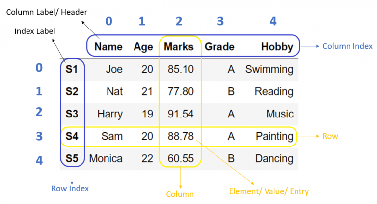

Pandas es una de las librerías más usadas de Python. Recibe su nombre del acrónimo "Panel Data", y es especialmente útil en el terreno de la ciencia de datos y el machine learning, ya que permite el manejo y manipulación de grandes volúmenes de información estructurada. Además de manipular datos, esta librería posibilita la importación de datos desde múltiples fuentes: bases de datos, archivos json, csv, excel, html, etc. También permite exportar los datos a formatos que sean explotables desde otros programas.
Un dataframe es un conjunto de datos estructurados en filas, columnas e índices. Es similar a lo que visualmente tenemos en Excel. Cuando importamos datos usando Pandas, o bien cuando creamos nuevos conjuntos de datos, Pandas estructura esta información usando "DataFrames".
Para poder usar Pandas, es necesario tener la libreria instalada en nuestro sistema. Para ello, abriremos una consola o terminal, y usaremos el comando:
pip install pandas
Una vez instalada, deberás "importar" la liberaría desde el código python que estés creando. Para ello, al inicio del documento .py, usaremos la siguiente importanción:
import pandas as pd
Para importar un conjunto de datos desde un archivo .csv o excel, usaremos la función read_csv(argumentos). Ejemplo: tenemos un archivo en formato CSV con los siguientes datos:
nom,punts joan,2 carles,3 adria,10 esther,17 claudia,18 jaume,12 Laura,14 Quim,6
Podemos importarlo con el siguiente código:
import pandas as pd dataframe = pd.read_csv("ejemplo.csv") print(dataframe)
nom punts 0 joan 2 1 carles 3 2 adria 10 3 esther 17 4 claudia 18 5 jaume 12 6 Laura 14 7 Quim 6
Existen muchos tipos de archivos desde los que importar datos. Además, en algunas ocasiones, los datos no están necesariamente estructurados de la forma "estándar". Por ejemplo, un arxivo CSV puede usar como delimitador de datos los siguientes carácteres: "," o bien ";"... Pero también puede usarse el tabulador u otros. Por lo tanto, será necesario ajustar los argumentos de la importación para cada caso. Para ello, puedes leer la documentación aquí: Pandas Read The Docs
Para exportar un dataframe a un formato que podamos trabajar con software como Excel o Tableau, es necesario exportar los datos a un formato tipo csv, xlsx, o tab (entre otros). Para ello Pandas tiene dos funciones básicas: to_csv() y to_excel().
Read The Docs: to_csv(args)
Read The Docs: to_excel(args)